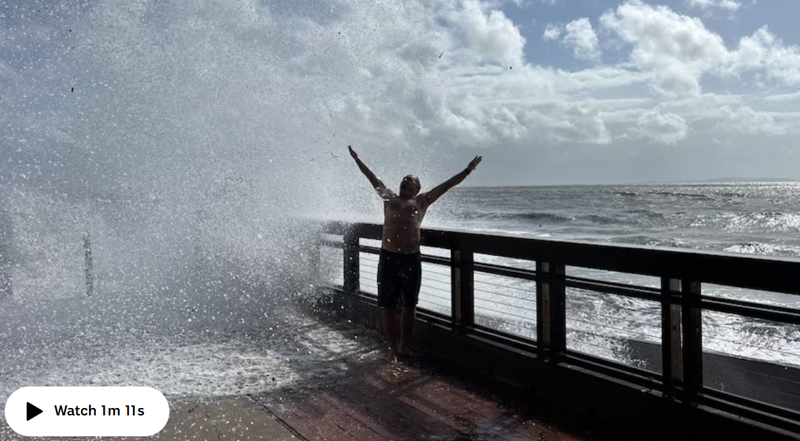

Coastal warnings span 800km as Cyclone Alfred drops to category three

The power of Severe Tropical Cyclone Alfred has triggered warnings spanning almost 800km of the Queensland coastline, despite the system remaining offshore.
Alfred was revised down to a category three system after intensifying to category four on Thursday last night.
The cyclone was 770 kilometres north-east of Rockhampton at 4am Friday, according to the Bureau of Meteorology (BOM).
A strong wind warning issued for Townsville, Mackay, Capricornia, Hervey Bay and K'gari remains in place.

On Friday afternoon, rangers on K'gari said they were warning campers already on the island to be prepared to leave, and asked visitors to stay away.
Ranger Danielle Mansfield said campers should avoid the heritage-listed island along with coastal parts of the mainland.